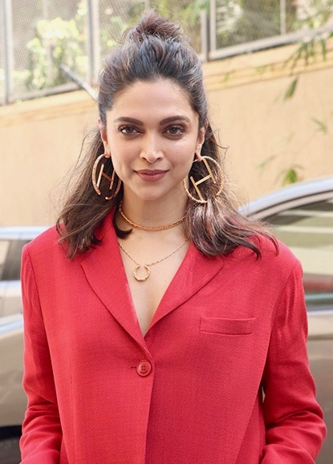
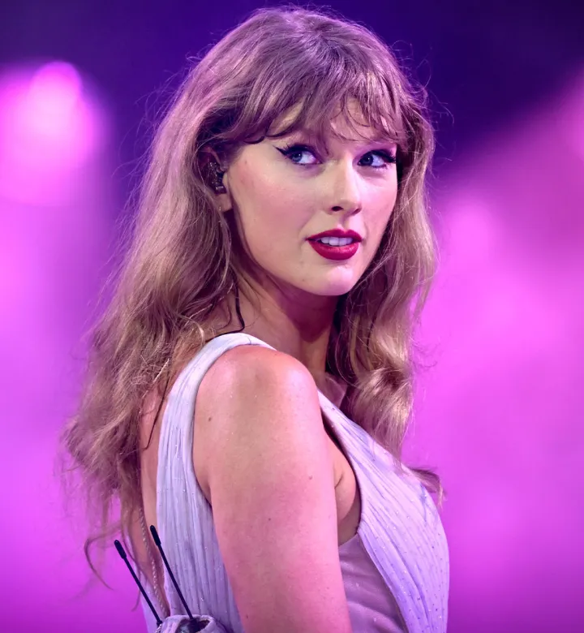
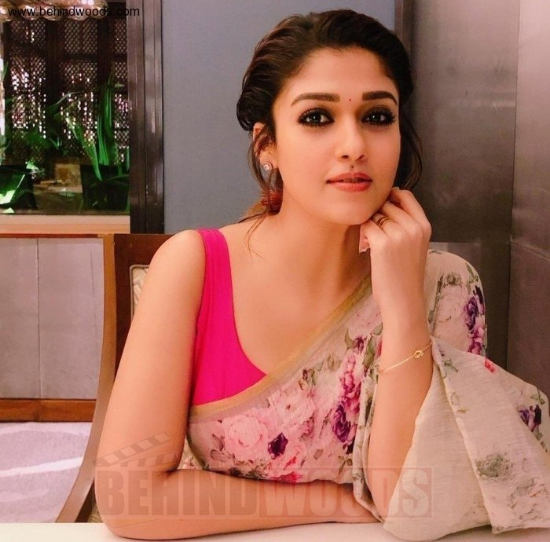

Tom Cruise
Tom Cruise is an American actor and producer known for his roles in action films such as "Top Gun", "Mission: Impossible", and many more.
Born on July 3, 1962, in Syracuse, New York, Tom Cruise became a global icon in the 1980s and 1990s, establishing himself as one of the highest-paid actors in Hollywood. His performances have earned him multiple awards, nominations, and a loyal fan base around the world.
Some of his other notable movies include "Jerry Maguire", "The Last Samurai", and "Rain Man". With his career spanning over four decades, Cruise continues to make an impact in the entertainment industry with his intense action roles and dedication to performing his own stunts in the "Mission: Impossible" franchise.

Emma Watson
Emma Watson is a British actress, model, and activist, best known for portraying Hermione Granger in the "Harry Potter" film series, which catapulted her to international fame at a young age.
She was born on April 15, 1990, in Paris, France, to British parents. Watson began acting at the age of nine, having no prior professional experience in acting before landing the role of Hermione in 2001.
Aside from her acting career, Emma Watson is also recognized for her advocacy for women's rights and gender equality.

Virat Kohli
Virat Kohli is an Indian cricketer and one of the most prominent and successful players in modern cricket. He was born on November 5, 1988, in Delhi, India. Known for his aggressive batting style, Kohli is regarded as one of the best batsmen in the world.
His remarkable consistency, ability to chase down challenging totals, and sharp cricketing instincts have made him a key figure in both Indian and international cricket.
Kohli made his debut for the Indian national team in 2008 in an One Day International (ODI) against Sri Lanka.
Deepika Padukone
Deepika Padukone is one of India's most celebrated actresses and a leading figure in the Bollywood film industry. She was born on January 5, 1986, in Copenhagen, Denmark, to a prominent family; her father, Prakash Padukone, is a former international badminton player, and her mother, Ujjala, is a travel agent. Deepika grew up in Bangalore and initially pursued a career in sports before turning to modeling and acting.
She made her Bollywood debut in 2007 with the film Om Shanti Om, directed by Farah Khan, alongside Shah Rukh Khan. The film was a massive hit, and Deepika's performance garnered widespread attention, marking the beginning of a successful career in cinema. She quickly became one of the most in-demand actresses in Bollywood.

Dulquer Salmaan
Dulquer Salmaan is an Indian actor known for his work in Malayalam cinema, though he has also appeared in Tamil, Telugu, and Hindi films. He is the son of the famous Malayalam actor Mammootty, but Dulquer has carved out his own identity in the film industry through his diverse roles and performances.
Dulquer has a huge fan following not only in Kerala but also among audiences across the country due to his diverse filmography and the international appeal of his projects.
Taylor Swift
Taylor Alison Swift (born December 13, 1989) is an American singer-songwriter. Known for her autobiographical songwriting, artistic reinventions, and cultural impact, Swift is a leading figure in popular music and the subject of widespread media coverage, with a vast fanbase known as Swifties.
Swift signed to Big Machine Records in 2005, debuting as a country singer with the albums Taylor Swift (2006) and Fearless (2008). The singles "Teardrops on My Guitar", "Love Story", and "You Belong with Me" found crossover success on country and pop radio formats

Gong Yoo
Gong Ji-cheol (Korean: 공지철; born July 10, 1979), known professionally as Gong Yoo (공유), is a South Korean actor.
He is best known for his starring roles in the television series Coffee Prince (2007), Guardian: The Lonely and Great God (2016–2017), the Netflix series Squid Game (2021–2024),[2][3] and the films Silenced (2011), Train to Busan (2016) and The Age of Shadows (2016).
Gong Ji-cheol was born on July 10, 1979, in Busan, South Korea. He is the second child and only son of Gong Won and Yoo Myung-joo.

V
Kim Tae-hyung (Korean: 김태형; born December 30, 1995), known professionally as V (뷔), is a South Korean singer, songwriter, and a member of the boy band BTS.
Since his debut with the band in 2013, V has performed three solo songs under their name—"Stigma" in 2016, "Singularity" in 2018, and "Inner Child" in 2020—all of which charted on South Korea's Gaon Digital Chart.
Outside of his music projects with BTS, V had his acting debut in the 2016 television series Hwarang: The Poet Warrior Youth and contributed the single "It's Definitely You" to its soundtrack.

Mohanlal
Mohanlal Viswanathan ( born 21 May 1960), known mononymously as Mohanlal, is an Indian actor, film producer, playback singer, film distributor, and director who predominantly works in Malayalam film industry besides also having sporadically appeared in Tamil, Hindi, Telugu and Kannada films.
Mohanlal has a prolific career spanning over four decades, during which he has acted in more than 400 films.
The Government of India honoured him with Padma Shri in 2001, and Padma Bhushan in 2019, India's fourth and third highest civilian honours,[8] for his contributions to Indian cinema.
Nayanthara
Nayanthara (born Diana Mariam Kurian; 18 November 1984) is an Indian actress who works predominantly in Tamil, Telugu and Malayalam cinema.
One of the highest-paid actresses in India, Nayanthara was the only South Indian actress to be featured in the Forbes India "Celebrity 100" list of 2018.
She has acted in more than 75 films in a career spanning over two decades and has won numerous awards, such as five Filmfare Awards South, one Tamil Nadu State Film Award, a Nandi Award and seven SIIMA Awards.